Lockular excels in developing systems that provide undeniable proof of the history and integrity of both physical and electronic products from their origin to the end-user.
Our expertise in trustless provenance tracking empowers businesses to verify and oversee the custody of their products and creations, enhancing transparency and building trust across their supply chains, while significantly reducing the risk of fraud.
Real problems that are related to the origins of things include
Is it Real? Is it Fake? Was it made by a Human?
Where do the components in my bill of materials come from?
Which design elements were associated with the recently identified malicious entity?
Did I really sanction that use of my data?
Much of the heavy lifting in a solution that requires provenance tracking can be realised using just two core Lockular components
Provenance Tracking Filesystem
This blockchain-native filesystem for organisations that require guaranteed integrity and immutable lifecycle tracking of their application data. NFS compatible, it integrates effortlessly into various application environments as an additional drive. Once deployed, it intrinsically monitors and records every aspect of data lifecycle, providing robust provenance tracking.
Workflow Actor Management
For industries requiring stringent knowledge of the teams that wrangle their data, this tool leverages smart contracts to maintain indisputable records of team structures and permissions across cooperating organisations. This approach provides unparalleled accountability, enabling precise irrefutable tracking and verification of team structures at any point in time.
Together, they ensure comprehensive traceability of project outputs and a detailed record of all individuals or bots involved at every stage.
Be sure to check out Lockular's provenance